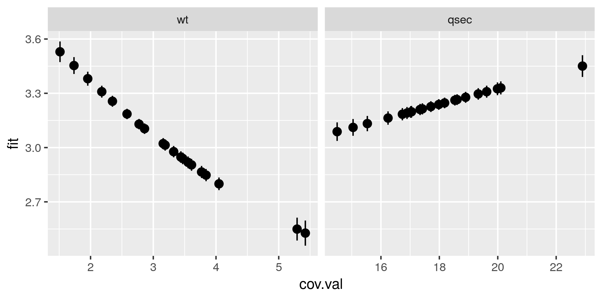

Select the best covariates to fit a model
StatnMap - Sébastien Rochette
2019-06-25
Source:vignettes/Covar_Selection.Rmd
Covar_Selection.RmdOutlines
This library has been created for model selection to predict species distribution (Biomass, density or presence/absence). Its final aim is to produce maps of predicted distributions. However, the core is a k-fold cross-validation model selection procedure that can be applied to any kind of model, provided that parameters of the selection are well defined. We use the classical cars dataset to show the different possibilities of the library. The variable of interest is mpg. This is a continuous numerical variable, only positive. This is in accordance with our data modelling case datatype = "ContPosNull" (continuous positive or null) and the model types associated (modeltypes). For other types of data, refer to the documentation (in particular, options in modelselect_opt) to correctly set your modelling parameters.
Note that most figures of the vignette are saved in “inst” so that model selection is not run during vignette building. However, code in the vignettes can be run on your own computer and should return the same outputs. To do so, open and run this Rmd file: /home/travis/R/Library/SDMSelect/Covar_Selection/Covar_Selection.Rmd.
Dataset
| mpg | cyl | disp | hp | drat | wt | qsec | vs | am | gear | carb |
|---|---|---|---|---|---|---|---|---|---|---|
| 21.0 | 6 | 160 | 110 | 3.90 | 2.620 | 16.46 | 0 | 1 | 4 | 4 |
| 21.0 | 6 | 160 | 110 | 3.90 | 2.875 | 17.02 | 0 | 1 | 4 | 4 |
| 22.8 | 4 | 108 | 93 | 3.85 | 2.320 | 18.61 | 1 | 1 | 4 | 1 |
| 21.4 | 6 | 258 | 110 | 3.08 | 3.215 | 19.44 | 1 | 0 | 3 | 1 |
| 18.7 | 8 | 360 | 175 | 3.15 | 3.440 | 17.02 | 0 | 0 | 3 | 2 |
| 18.1 | 6 | 225 | 105 | 2.76 | 3.460 | 20.22 | 1 | 0 | 3 | 1 |
Modify the dataset to work with the library
In this case, this only consists in changing observation column name to dataY and append factor column names with factor_ for compatibility with following functions.
data.new <- Prepare_dataset(
x = data, var = 1, cov = 2:ncol(data),
datatype = "Cont", na.rm = TRUE
)| dataY | cyl | disp | hp | drat | wt | qsec | factor_vs | factor_am | factor_gear | factor_carb |
|---|---|---|---|---|---|---|---|---|---|---|
| 21.0 | 6 | 160 | 110 | 3.90 | 2.620 | 16.46 | 0 | 1 | 4 | 4 |
| 21.0 | 6 | 160 | 110 | 3.90 | 2.875 | 17.02 | 0 | 1 | 4 | 4 |
| 22.8 | 4 | 108 | 93 | 3.85 | 2.320 | 18.61 | 1 | 1 | 4 | 1 |
| 21.4 | 6 | 258 | 110 | 3.08 | 3.215 | 19.44 | 1 | 0 | 3 | 1 |
| 18.7 | 8 | 360 | 175 | 3.15 | 3.440 | 17.02 | 0 | 0 | 3 | 2 |
| 18.1 | 6 | 225 | 105 | 2.76 | 3.460 | 20.22 | 1 | 0 | 3 | 1 |
Covariates correlation
Due to identifiability issues, highly correlated environmental covariates should not be included in the same models. Correlations between all possible pairs of covariates are tested using the Spearman’s rho coefficient. Here, a rho value exceeding 0.7 considers covariates too correlated to be included in the same model. However, the following cross-validation procedure also guarantees too correlated covariates not to be included in the same models as gain in prediction may be low. Thus, the present covariates correlation selection step mainly allows the number of tested models to be reduced.
corSpearman <- Param_corr(
x = data.new, rm = 1, thd = 0.7, visual = FALSE,
plot = TRUE, saveWD = tmpdir, img.size = 5)Correlation between covariates
Find the best combination of covariates
Set options for presence-absence models. Have a look at options documentation ?modelselect_opt.
modelselect_opt(RESET = TRUE)
modelselect_opt$Max_nb_Var <- 5
modelselect_opt$datatype <- "ContPosNull"
modelselect_opt$modeltypes <- modelselect_opt$modeltypes[c(1, 5, 11)]Procedure selects combination of covariates in each iteration from one covariate to the maximum defined (modelselect_opt(“Max_nb_Var”) = 5). This reproduces the procedure separately for all model types defined (modelselect_opt(“modeltypes”) = LogContGLM, GammaGLMns, Cont). Here, for the example, I only run the model for three “modeltypes” (LogContGLM, NA, NA).
The output of findBestModel function is the link to a zipped file of all outputs saved in the saveWD directory.
Order models according to quality of prediction
Model selection was realised separately for each distribution tested. The exact same k-fold cross-validation datasets have been used to keep the best model at each step of the iteration procedure. All indices of goodness of fit can thus be compared among the distributions tested with paired statistical tests. This allows to order all models tested.
Two tables are available:
- “VeryBestModels_crossV” retains the best model and the ones not significantly worse than the first one.
| Num | model | Mean_RMSE_crossV | AIC | modeltype |
|---|---|---|---|---|
| 5 | log(dataY) ~ poly(wt,2) + qsec | 2.30 | 144 | LogContGLM |
| 21 | dataY ~ ns(wt, df=2) + qsec | 2.30 | 145 | GammaGLMns |
| 9 | log(dataY) ~ wt + poly(qsec,2) + factor_gear | 2.31 | 146 | LogContGLM |
- “BestForModeltypes” retains the first two best models of each “modeltype”.
| Num | model | Mean_RMSE_crossV | AIC | modeltype |
|---|---|---|---|---|
| 37 | dataY ~ s(wt,k=5) + s(qsec,k=5) | 2.44 | 148 | Cont |
| 41 | dataY ~ s(wt,k=5) + s(qsec,k=5) + factor_gear | 2.60 | 149 | Cont |
| 21 | dataY ~ ns(wt, df=2) + qsec | 2.30 | 145 | GammaGLMns |
| 22 | dataY ~ ns(wt, df=2) + ns(qsec, df=2) | 2.33 | 146 | GammaGLMns |
| 5 | log(dataY) ~ poly(wt,2) + qsec | 2.30 | 144 | LogContGLM |
| 9 | log(dataY) ~ wt + poly(qsec,2) + factor_gear | 2.31 | 146 | LogContGLM |
Predictions of the best model
We can choose one model, the best one here, and create a set of figure outputs to explore what it is predicting. Figures are saved in saveWD and its compressed version (its path is the output of the function, here stored in res.file)
Num.Best <- BestModels$VeryBestModels_crossV$Num[1]
res.file <- ModelResults(saveWD = tmpdir, plot = TRUE,
Num = Num.Best, Marginals = TRUE)In the case of a model with positive values as here, the outputs are the following. If the best model is with a log-transformation, figures are mainly created in the log-scale
Analysis of variance. Deviance explained by each covariate when added sequentially in the order specified by the cross-validation procedure. “%Exp.Dev” stands for percentage of explained deviance. “RMSE” is the root mean squared error on the validation datasets as issued from the cross-validation procedure, “>Diff” being the difference of RMSE with the previous step.

Residuals analysis

Marginal predictions by covariates. These are simplified marginal effects of each covariate in the range of observations. All covariates values except one have been fixed so that their combination give a prediction close to the mean of observations. These simplified marginals figures are to be read for their relative effect and not for their absolute prediction.
Comparison of predictions against observations